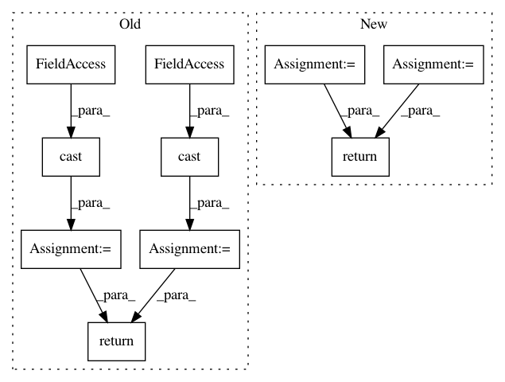

6bf3f51cd0a312da842157665663c2dad9983248,tensorflow_ranking/python/losses_impl.py,ClickEMLoss,_compute_latent_prob,#ClickEMLoss#,914
Before Change
P(examination | click) and P(relevance | click).
with tf.compat.v1.name_scope(name="compute_latent_prob"):
exam_prob = tf.math.sigmoid(tf.cast(exam_logits, tf.float32))
rel_prob = tf.math.sigmoid(tf.cast(rel_logits, tf.float32))
is_clicked = tf.greater_equal(tf.cast(clicks, tf.float32), 1.0)
prob_non_clicks = 1 - exam_prob * rel_prob + 1e-6
exam_prob_given_non_clicks = exam_prob * (1 - rel_prob) / prob_non_clicks
rel_prob_given_non_clicks = (1 - exam_prob) * rel_prob / prob_non_clicks
exam_prob_given_non_clicks, rel_prob_given_non_clicks = [
tf.stop_gradient(
tf.compat.v1.where(is_clicked, tf.ones_like(prob), prob))
for prob in [exam_prob_given_non_clicks, rel_prob_given_non_clicks]
]
return exam_prob_given_non_clicks, rel_prob_given_non_clicks
def compute_unreduced_loss(self, labels, logits):
Computes the loss for each element.
After Change
is_clicked = tf.greater_equal(tf.cast(clicks, tf.float32), 1.0)
exam_logits_posterior = exam_logits - tf.math.softplus(rel_logits)
rel_logits_posterior = rel_logits - tf.math.softplus(exam_logits)
exam_prob_posterior = tf.compat.v1.where(
is_clicked, tf.ones_like(exam_logits_posterior),
tf.sigmoid(exam_logits_posterior))
rel_prob_posterior = tf.compat.v1.where(
is_clicked, tf.ones_like(rel_logits_posterior),
tf.sigmoid(rel_logits_posterior))
return tf.stop_gradient(exam_prob_posterior), tf.stop_gradient(
rel_prob_posterior)
def compute_unreduced_loss(self, labels, logits):
Computes the loss for each element.
In pattern: SUPERPATTERN
Frequency: 3
Non-data size: 10
Instances
Project Name: tensorflow/ranking
Commit Name: 6bf3f51cd0a312da842157665663c2dad9983248
Time: 2021-01-29
Author: xuanhui@google.com
File Name: tensorflow_ranking/python/losses_impl.py
Class Name: ClickEMLoss
Method Name: _compute_latent_prob
Project Name: tensorflow/privacy
Commit Name: cec011e2a797a32a9b102a69d2d799256de7ca98
Time: 2020-06-08
Author: galenandrew@google.com
File Name: tensorflow_privacy/privacy/dp_query/quantile_adaptive_clip_sum_query.py
Class Name: QuantileAdaptiveClipSumQuery
Method Name: initial_global_state
Project Name: thunlp/OpenKE
Commit Name: 0ab6621dcd3e9cd97a257ea2d8d05b23bfba8609
Time: 2020-04-08
Author: thu.hanxu13@gmail.com
File Name: openke/module/model/HolE.py
Class Name: HolE
Method Name: _ccorr